Getting Started
The Town of Enfield Interactive Map provides public access to property records, zoning, school districts, flood zones, and more for all parcels within Enfield, CT.
Quick start: Use the search bar in the upper right to find a property by street address, Parcel ID, or Map and Lot number. Click a result to zoom to the parcel and load its details in the left panel.
Help Button
The Help button is located in the header bar at the top of the application. Clicking it opens this help and FAQ page at any time while using the map. Use it to look up how a tool works, browse the legend, find answers to common questions, or reach Enfield GIS Support.
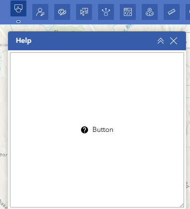
Sign In (Staff Only)
The Sign In button is located in the top left of the toolbar and is intended for Town of Enfield staff only. Signing in with your ArcGIS Online account may unlock additional tools and capabilities not available to the general public.
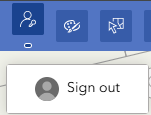
Search
The search bar is located in the upper right of the application. It accepts three types of input. Type your term and select a result from the dropdown to zoom directly to that parcel.
Note: Values shown are examples only and may not reflect actual application data.
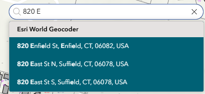
Property Information Panel
When a parcel is selected, the left panel populates with detailed information in collapsible sections. Each section can be expanded or collapsed by clicking its header. The entire panel can be collapsed using the arrow button on the right edge of the panel. Action buttons at the top link to external resources.
Action Buttons
Information Sections
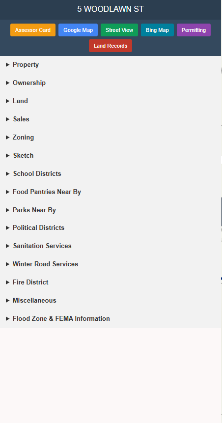
Select Tool
The Select tool lets you click or draw on the map to select one or more parcels. Selected parcels highlight and their details load in the left panel.
- 1Click the Select icon in the toolbar.
- 2Use the dropdown to switch between point, rectangle, or polygon selection modes.
- 3Click or draw on the map to select parcels.
- 4Click Clear All in the Select panel to deselect.
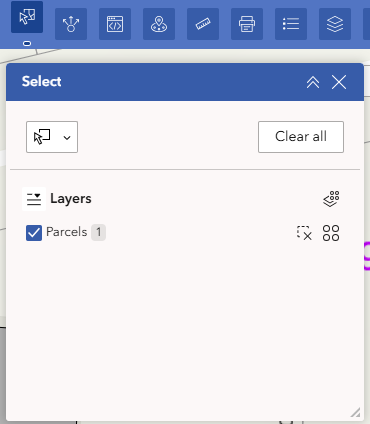
Markup / Draw Tool
The Markup tool opens a drawing toolbar for annotating the map with points, lines, shapes, and text. Markup is temporary and not saved between sessions.
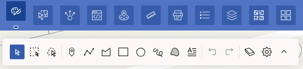
🔍 Click to enlarge
Abutters (Near Me)
The Abutters tool identifies parcels within a specified distance of a selected location. Commonly used for public hearing notification lists.
- 1Select a parcel first, then click the Abutters icon. If you open the tool before selecting a parcel, you will need to select the parcel again for the tool to activate.
- 2Choose a location method: point, polyline, or polygon.
- 3Set your buffer distance in Feet (default 30 ft).
- 4Adjacent parcels are highlighted and listed with owner information.
- 5Use the export icon to download a ZIP file for the Mail Label Generator.
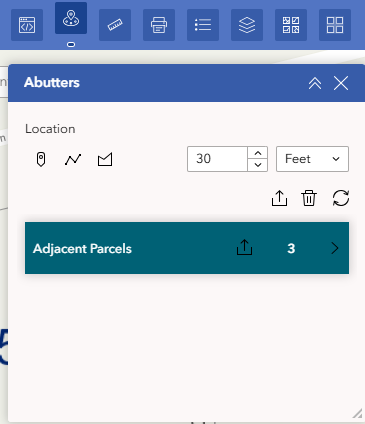
Abutters Mail Label Generator
The Mail Label Generator is a custom tool provided for the Town of Enfield. It converts an abutters list exported from the Abutters tool into print-ready Avery 5160 mailing labels.
- 1Use the Abutters tool to generate a list and export it as a ZIP file.
- 2Open the Mail Label Generator from the toolbar.
- 3Upload ZIP — upload the exported file.
- 4Configure — set your label options.
- 5Generate — download the print-ready PDF.
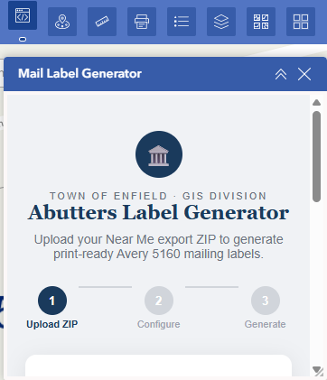
Measure
The Measure tool calculates distances and areas on the map in real time. Supports distance and area modes with selectable units.
- 1Click the Measure icon in the toolbar.
- 2Select distance or area mode using the toggle icons.
- 3Choose your units from the dropdown (Feet, Imperial, Meters, etc.).
- 4Click on the map to place your first point, then continue clicking to add segments.
- 5Double-click to finish. Use the trash icon to clear the measurement.
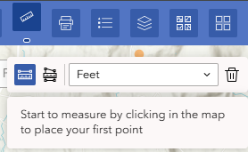
The Print tool exports the current map view as a PDF. Position and zoom the map to the area you want before generating the output.
- 1Zoom and pan the map to the area you want to print.
- 2Click the Print icon in the toolbar.
- 3Select a Template (e.g., A3 Landscape).
- 4Check Show print area to preview the output boundary.
- 5Click Print. Depending on the size of the area, this may take a moment to generate.
- 6When ready, a link appears in a new panel replacing the print form. Click it to open the PDF in a new window where you can review, download, or print. A Reset button lets you start a new print job.
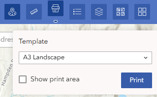
Map Layers
The Map Layers panel lets you toggle optional data layers on and off. These layers are hidden by default to keep the map clean. Check the box next to a layer name to enable it on the map.
Once a layer is enabled, its symbol will appear in the Legend. Some layers are scale-dependent and will only display at certain zoom levels — zoom in or out if a layer is not appearing as expected.
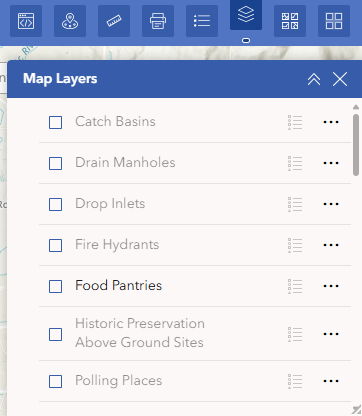
Legend
The Legend explains the symbols and colors currently visible on the map. It updates automatically based on which layers are enabled in the Map Layers panel and the current zoom level. Some layers only display at certain zoom levels and will not appear in the Legend until visible on the map.
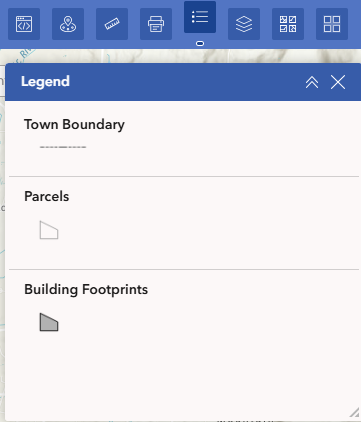
Local Aerial Gallery
The Local Aerial Gallery provides high-resolution aerial photography specific to Connecticut, sourced from the University of Connecticut (UConn) CLEAR program. Click a thumbnail to switch to that imagery.
Spring imagery is captured before leaves appear on trees, offering clear views of structures and ground features. Summer (NAIP) imagery is captured mid-season by the USDA National Agriculture Imagery Program. Resolution refers to ground sample distance — smaller numbers mean higher detail. 3-inch resolution shows individual features clearly; 0.6-meter is broader but still useful for context.
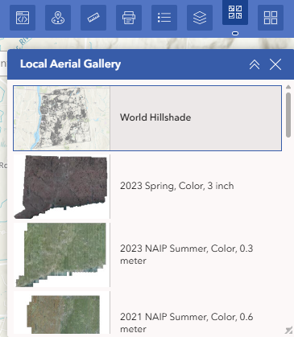
Basemap Gallery
The Basemap Gallery provides general-purpose map backgrounds for the application. Click any thumbnail to switch to that basemap. The default is Topographic, which shows elevation contours and terrain features suited for property and land use work.
Streets is useful when you need to focus on road layout and address locations. Imagery provides global satellite coverage from Esri when local Connecticut aerials are not needed. Imagery Hybrid combines satellite imagery with street name labels for the best of both views.
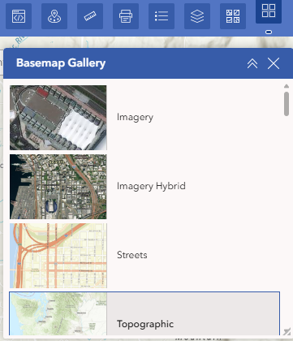
FAQ & Troubleshooting
Contact & Feedback
Enfield GIS Support
Have a question, found a data error, or want to share feedback about the application?
✉ Email GIS Support 🗺 Back to Map 🏠 Town Homepage